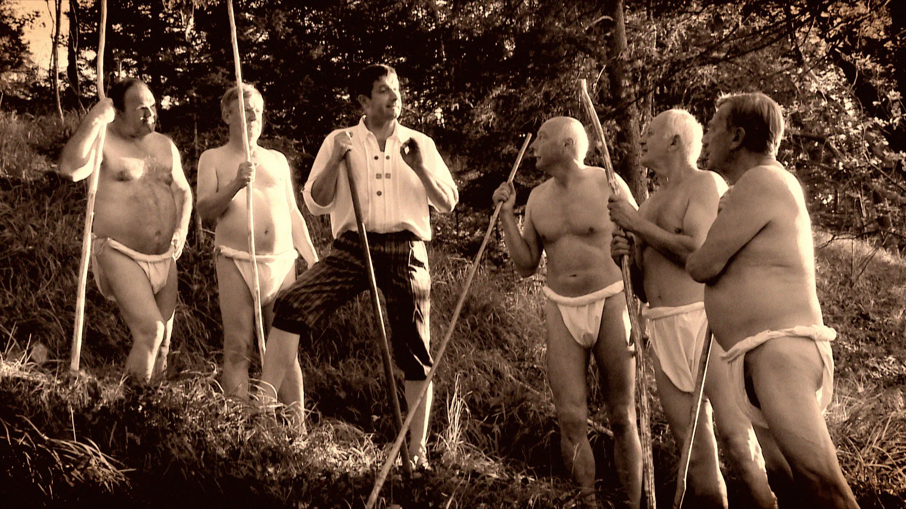

ponedeljek, 19. 6. 2023 ob 21.30
Zdraviliški park, Bled
Jezik: slovenščina
"Doktor" Arnold Rikli se je pred strogim očetom, bogatim švicarskim tovarnarjem in politikom iz Wangna ob Aari umaknil na Avstrijsko Koroško. Nova barvarna bombažne preje v značilni turški rdeči barvi jim ni prinesla sreče. Hudo bolan si je že drugič pomagal sam in upošteval nasvet Korošcev: »Na Bledu se boš pozdravil in si povrnil moči«. Natančno pred 160 leti je na Bledu odkril čudovito naravo, postal »vernik« svoje terapije z vodo, zrakom in soncem. Bil je pionir hidro, helio in foto terapije in začetnik naturizma. S svojim načinom zdravljenja je na Bled privabil goste iz vse Evrope.
Vstop prost!

Zdraviliški park, Bled
Arnold Rikli - Voda, zrak, sonce
Amalija Jelen Mikša / Slovenija / 2014 / 58’ / celovečerni dokumentarni film / biografskiJezik: slovenščina
"Doktor" Arnold Rikli se je pred strogim očetom, bogatim švicarskim tovarnarjem in politikom iz Wangna ob Aari umaknil na Avstrijsko Koroško. Nova barvarna bombažne preje v značilni turški rdeči barvi jim ni prinesla sreče. Hudo bolan si je že drugič pomagal sam in upošteval nasvet Korošcev: »Na Bledu se boš pozdravil in si povrnil moči«. Natančno pred 160 leti je na Bledu odkril čudovito naravo, postal »vernik« svoje terapije z vodo, zrakom in soncem. Bil je pionir hidro, helio in foto terapije in začetnik naturizma. S svojim načinom zdravljenja je na Bled privabil goste iz vse Evrope.
Vstop prost!